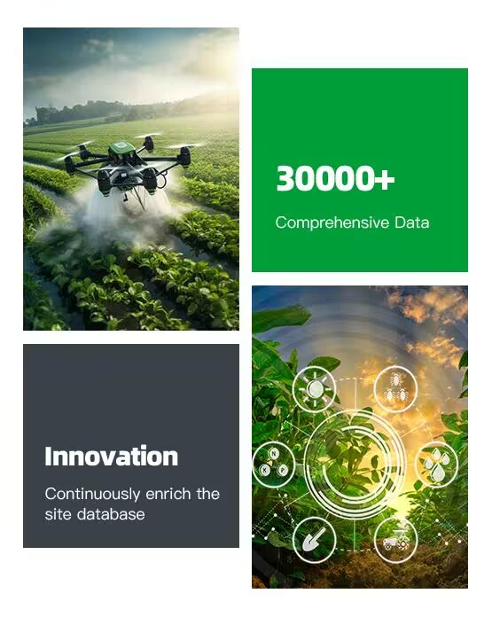

Demystifying Pesticide Usage: Discover the intricate relationship between pesticides, crops, and plant diseases, and how these chemicals play a crucial role in modern agriculture.
WEBSITEINTRODUCTION
Explore a whole new world of plant disease
2000+
200000+
2+

Our Service
Q&A
About Smart Q&A
Graph
Knowledge Graph Query
OUR PROMISE
Plant Disease Information
We provide extensive and practical plant disease information, covering various plant types and disease categories, to help users better protect and manage their plants.
Updates and Improvements
We continuously update and expand our content library, and improve diagnostic models to ensure users always receive the most accurate and up-to-date information, enhancing their user experience.

Valuing User Feedback
We value user feedback and opinions, which help us continuously improve and enhance our services to better meet users' needs.
Prompt Issue Resolution
If users encounter any issues while using our website or have any suggestions for improvement, our team will promptly respond and address their concerns to ensure users have a positive experience.